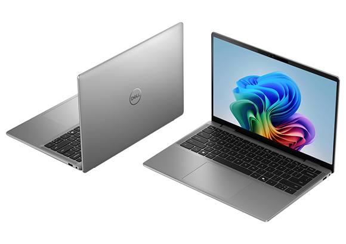
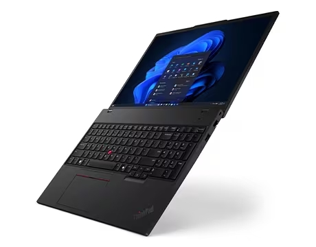

Dell portátil Latitude 7455

Potencia y rendimiento para estudio, trabajo y entretenimiento


Ahora con los chips M5, M5 Pro y M5 Max.
La serie de chips más avanzada que hemos creado para una laptop pro. Todos los chips de la línea M5 ofrecen un rendimiento de CPU descomunal en tareas monohilo y multihilo y una memoria unificada más rápida para llevar la velocidad al filo de lo imposible. El almacenamiento SSD es hasta dos veces más rápido que antes.12 Y gracias a los Neural Accelerators, las tareas de inteligencia artificial van a mil por hora.